전기산업기사 (2015-05-31 기출문제)
1과목: 전기자기학
1. 전기력선의 성질에 관한 설명으로 틀린 것은?
- 전기력선의 방향은 그 점의 전계의 방향과 같다
- 전기력선은 전위가 높은 점에서 낮은 점으로 향한다.
- 전하가 없는 곳에서도 전기력선의 발생, 소멸이 있다.
- 전계가 0이 아닌 곳에서 2개의 전기력선은 교차하는 일이 없다.
(정답률: 79%)

2. 두 벡터 A=2i+4j, B=6j-4k가 이루는 각은 약 몇°인가?
- 36
- 42
- 50
- 61
(정답률: 67%)
3. 자계 내에서 운동하는 대전입자의 작용에 대한 설명으로 틀린 것은?
- 대전입자의 운동방향으로 작용하므로 입자의 속도의 크기는 변하지 않는다.
- 가속도 벡터는 항상 속도 벡터와 직각이므로 입자의 운동 에너지도 변화하지 않는다.
- 정상 자계는 운동하고 있는 대전입자에 에너지를 줄 수가 없다.
- 자계 내 대전입자를 임의 방향의 운동 속도로 투입하면 cosθ에 비례한다.
(정답률: 54%)
4. 2cm의 간격을 가진 두 평행도선에 1000A의 전류가 흐를 때 도선 1m마다 작용하는 힘은 몇 N/m인가?
- 5
- 10
- 15
- 20
(정답률: 58%)
5. 투자율 μ=μ0, 굴절률 n=2, 전도율σ=0.5의 특성을 갖는 매질내부의 한 점에서 전계가 E=10cos(2πft)ax로 주어질 경우 전도전류와 변위 전류 밀도의 최대값의 크기가 같아지는 전계의 주파수 f(GHz)는?
- 1.75
- 2.25
- 5.75
- 10.25
(정답률: 51%)
6. 면적 S[m2]의 평행한 평판 전극 사이에 유전율이ℇ1, ℇ2[F/m] 되는 두 종류의 유전체를 d/2 두께가 되도록 각각 넣으면 정전용량은 몇 [F]이 되는가?(오류 신고가 접수된 문제입니다. 반드시 정답과 해설을 확인하시기 바랍니다.)
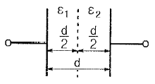
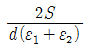
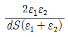
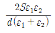
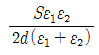
(정답률: 58%)
7. 접지된 무한히 넓은 평면도체로부터 a[m]떨어져 있는 공간에 Q[C]의 점전하가 놓여 있을 때 그림 P점의 전위는 몇 V인가?
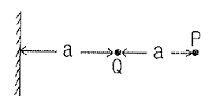
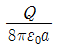
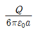
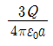
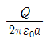
(정답률: 50%)
8. 어느 철심에 도선을 250회 감고 여기에 4A의 전류를 흘릴 때 발생하는 자속이 0.02Wb 이었다. 이 코일의 자기 인덕턴스는 몇 H인가?
- 1.⑤
- 1.25
- 2.5
- √2π
(정답률: 78%)
9. 옴의 법칙에서 전류는?
- 저항에 반비례하고 전압에 비례한다.
- 저항에 반비례하고 전압에도 반비례한다.
- 저항에 비례하고 전압에 반비례한다.
- 저항에 비례하고 전압에도 비례한다.
(정답률: 84%)
10. 전계와 자계의 기본법칙에 대한 내용으로 틀린 것은?
- 암페어의 주회적분 법칙 :

- 가우스의 정리 :

- 가우스의 정리 :

- 페러데이의 법칙 :

(정답률: 62%)
11. 다음 물질 중 반자성체는?
- 구리
- 백금
- 니켈
- 알루미늄
(정답률: 60%)
12. 철심에 도선을 250회 감고 1.2A의 전류를 흘렸더니 1.5×10-3Wb의 자속이 생겼다. 자기저항[AT/Wb]은?
- 2×105
- 3×105
- 4×105
- 5×105
(정답률: 70%)
13. 반지름 a[m]의 구도체에 Q[C]의 전하가 주어졌을 때 구심에서 5a[m]되는 점의 전위는 몇 V인가?
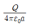
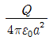
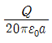
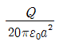
(정답률: 61%)
14. 전류 분포가 벡터자기포텐셜 A[Wb/m]를 발생시킬 때 점(-1,2,5)m 에서의 자속밀도 B[T]는? (단,
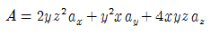
이다.)- 20ax-40ay+30az
- 20ax+40ay-30ax
- 2ax+4ay+3az
- -20ax-46az
(정답률: 50%)
15. 전류와 자계 사이에 직접적인 관련이 없는 법칙은?
- 앙페르의 오른나사 법칙
- 비오사바르의 법칙
- 플레밍의 왼손 법칙
- 쿨롱의 법칙
(정답률: 75%)
16. ℇ1＞ℇ2인 두 유전체의 경계면에 전계가 수직으로 입사할 때 단위 면적당 경계면에 작용하는 힘은?
- 힘
 이 ℇ2에서 ℇ1으로 작용한다.
이 ℇ2에서 ℇ1으로 작용한다. - 힘
 이 ℇ2에서 ℇ1으로 작용한다.
이 ℇ2에서 ℇ1으로 작용한다. - 힘
 이 ℇ1에서 ℇ2로 작용한다.
이 ℇ1에서 ℇ2로 작용한다. - 힘
 이 ℇ1에서 ℇ2로 작용한다.
이 ℇ1에서 ℇ2로 작용한다.
(정답률: 66%)
17. 축이 무한히 길고 반지름 a[m]인 원주 내에 전하가 축대칭이며, 축방향으로 균일하게 분포되어 있을 경우, 반지름 r＞a[m]되는 동심원통면상 외부의 한 점 P의 전계의 세기는 몇 V/m인가? (단, 원주의 단위 길이당의 전하를 λ[C/m]라 한다.)
- λ/ℇ0
- λ/2πℇ0
- λ/πa
- λ/2πℇ0r
(정답률: 69%)
18. 반지름이 2m, 3m 절연 도체구의 전위를 각각 5V, 6V로 한 후 가는 도선으로 두 도체구를 연결하면 공통 전위는 몇 V가 되는가?
- 5.2
- 5.4
- 5.6
- 5.8
(정답률: 67%)
19. 전기쌍극자로부터 임의의 점의 거리가 r이라 할때, 전계의 세기는 r과 어떤 관계에 있는가?
- 1/r에 비례
- 1/r2에 비례
- 1/r3에 비례
- 1/r4에 비례
(정답률: 78%)
20. 전하 Q1, Q2간의 전기력이 F1이고, 이 근처에 전하 Q3를 놓았을 경우 Q1과 Q2간의 전기력을 F2라 하면 F1과 F2의 관계는 어떻게 되는가?
- F1＞F2
- F1=F2
- F1＜F2
- Q3의 크기에 따라 다르다.
(정답률: 75%)
2과목: 전력공학
21. 60Hz, 154kV, 길이 200km인 3상 송전선로에서 대지정전용량 Cs=0.008㎌/㎞, 선간 정전용량 Cm=0.0018㎌/㎞일 때, 1선에 흐르는 충전 전류는 약 몇 A인가?
- 68.9
- 78.9
- 89.8
- 97.6
(정답률: 50%)
22. 440V 공공시설의 옥내 배선을 금속관 공사로 시설하고자 한다. 금속관에 어떤 접지공사를 해야 하는가?(관련 규정 개정전 문제로 여기서는 기존 정답인 4번을 누르면 정답 처리됩니다. 자세한 내용은 해설을 참고하세요.)
- 제 1종 접지공사
- 제 2종 접지공사
- 제 3종 접지공사
- 특별 제 3종 접지공사
(정답률: 56%)
23. 조상설비가 있는 1차 변전소에서 주변압기로 주로 사용되는 변압기는?
- 승압용 변압기
- 단권 변압기
- 단상 변압기
- 3권선 변압기
(정답률: 59%)
24. 소수력 발전의 장점이 아닌 것은?
- 국내 부존자원 활용
- 일단 건설 후에는 운영비가 저렴
- 전력생산 외에 농업용수 공급, 홍수 조절에 기여
- 양수발전과 같이 첨두부하에 대한 기여도가 많음
(정답률: 61%)
25. 아킹혼의 설치 목적은?
- 코로나손의 방지
- 이상전압 제한
- 지지물의 보호
- 섬락사고 시 애자의 보호
(정답률: 78%)
26. 유효낙차 400m의 수력발전소에서 펠턴수차의 노즐에서 분출하는 물의 속도를 이론값의 0.95배로 한다면 물의 분출속도는 약 몇 m/s인가?
- 42.3
- 59.5
- 62.6
- 84.1
(정답률: 31%)
27. 초고압 장거리 송전선로에 접속되는 1차 변전소에 병렬 리액터를 설치하는 목적은?
- 페란티 효과 방지
- 코로나 손실 경감
- 전압강하 경감
- 선로손실 경감
(정답률: 63%)
28. SF6 가스 차단기의 설명으로 틀린 것은?
- 밀폐구조이므로 개폐시 소음이 적다.
- SF6 가스는 절연내력이 공기보다 크다.
- 근거리 고장 등 가혹한 재기 전압에 대해서 성능이 우수하다.
- 아크에 의해 SF6 가스는 분해되어 유독가스를 발생시킨다.
(정답률: 82%)
29. 송전선로에서 역섬락을 방지하려면?
- 가공지선을 설치한다.
- 피뢰기를 설치한다.
- 탑각 접지저항을 적게 한다.
- 소호각을 설치한다.
(정답률: 79%)
30. 직류 송전방식이 교류 송전 방식에 비하여 유리한 점이 아닌 것은?
- 선로의 절연이 용이하다.
- 통신선에 대한 유도잡음이 적다.
- 표피효과에 의한 송전손실이 적다.
- 정류가 필요없고 승압 및 강압이 쉽다.
(정답률: 69%)
31. 그림과 같은 평형 3상 발전기가 있다. a상이 지락한 경우 지락전류는 어떻게 표현되는가? (단, Z0: 영상 임피던스, Z1: 정상 임피던스 Z2: 역상 임피던스이다.)
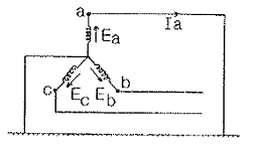
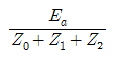
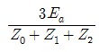
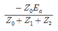
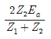
(정답률: 74%)
32. 전력 계통의 안정도 향상 대책으로 볼 수 없는 것은?
- 직렬 콘덴서 설치
- 병렬 콘덴서 설치
- 중간 개폐소 설치
- 고속차단, 재폐로 방식 채용
(정답률: 57%)
33. π형 회로의 일반회로 정수에서 B는 무엇을 의미하는가?
- 컨덕턴스
- 리액턴스
- 임피던스
- 어드미턴스
(정답률: 68%)
34. 전원이 양단에 있는 방사상 송전선로에서 과전류 계전기와 조합하여 단락 보호에 사용하는 계전기는?
- 선택지락 계전기
- 방향단락 계전기
- 과전압 계전기
- 부족전류 계전기
(정답률: 61%)
35. 송전단의 전력원 방정식이
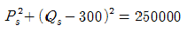
인 전력계통에서 최대전송 가능한 유효전력은 얼마인가?- 300
- 400
- 500
- 600
(정답률: 64%)
36. 그림에서 X 부분에 흐르는 전류는 어떤 전류인가?
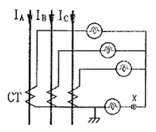
- b상 전류
- 정상 전류
- 역상 전류
- 영상 전류
(정답률: 79%)
37. 변류기 개방 시 2차측을 단락하는 이유는?
- 2차측 절연 보호
- 2차측 과전류 보호
- 측정오차 방지
- 1차측 과전류 방지
(정답률: 79%)
38. 그림과 같은 배전선이 있다. 부하에 급전 및 정전할 때 조작 방법으로 옳은 것은?
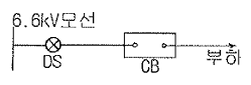
- 급전 및 정전할 때는 항상 DS, CB 순으로 한다.
- 급전 및 정전할 때는 항상 CB, DS 순으로 한다.
- 급전시는 DS, CB 순이고, 정전시는 CB, DS 순이다.
- 급전시는 CB, DS 순이고, 정전시는 DS, CB순이다.
(정답률: 75%)
39. 피뢰기가 방전을 개시할 때 단자전압의 순시값을 방전개시 전압이라 한다. 피뢰기 방전 중 단자 전압의 파고값을 무슨 전압이라고 하는가?
- 뇌전압
- 상용주파 교류전압
- 제한전압
- 충격 절연강도 전압
(정답률: 72%)
40. 3상 1회선과 대지간의 충전전류가 1km당 0.25A 일 때 길이가 18km인 선로의 충전전류는 몇 A인가?
- 1.5
- 4.5
- 13.5
- 40.5
(정답률: 60%)
3과목: 전기기기
41. 직류 분권 전동기가 단자전압 215V, 전기자 전류 50A, 1500rpm으로 운전되고 있을 때 발생 토크는 약 몇 N ㆍ m인가?(단, 전기자 저항은 0.1Ω이다.)
- 6.8
- 33.2
- 46.8
- 66.9
(정답률: 50%)
42. 어느 변압기의 1차 권수가 1500인 변압기의 2차측에 접속한 20Ω의 저항은 1차측으로 환산했을 때 8kΩ으로 되었다고 한다. 이 변압기의 2차 권수는?
- 400
- 250
- 150
- 75
(정답률: 60%)
43. SCR의 특징이 아닌것은?
- 아크가 생기지 않으므로 열의 발생이 적다.
- 열용량이 적어 고온에 약하다.
- 전류가 흐르고 있을때 양극의 전압강하가 작다.
- 과전압에 강하다.
(정답률: 64%)
44. 8극과 4극 2개의 유도 전동기를 종속법에 의한 직렬 종속법으로 속도제어를 할 때, 전원주파수가 60Hz인 경우 무부하 속도[rpm]는?
- 600
- 900
- 1200
- 1800
(정답률: 60%)
45. 1차전압 6900V, 1차권선 3000회, 권수비 20의 변압기가 60Hz에 사용할 때 철심의 최대 자속[Wb]은?
- 0.76×10-4
- 8.63×10-3
- 80×10-3
- 90×10-3
(정답률: 64%)
46. 동기 발전기의 병렬운전 시 동기화력은 부하각 δ와 어떠한 관계인가?
- tanδ에 비례
- cosδ에 비례
- sinδ에 반비례
- cosδ에 반비례
(정답률: 53%)
47. 30kW의 3상 유도전동기에 전력을 공급할 때 2대의 단상 변압기를 사용하는 경우 변압기의 용량[kVA]은? (단, 전동기의 역률과 효율은 각각 84%, 86%이고 전동기 손실은 무시한다.)
- 10
- 20
- 24
- 28
(정답률: 56%)
48. 동기 주파수 변환기의 주파수 f1및 f2 계통에 접속되는 양 극을 P1, P2라 하면 다음 어떤 관계가 성립되는가?
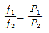
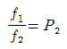
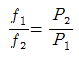
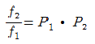
(정답률: 74%)
49. 유도 전동기 원선도에서 원의 지름은? (단, E는 1차전압, r은 1차로 환산한 저항, x는 1차로 환산한 누설리액턴스라 한다.)
- rE에 비례
- r×E에 비례
- E/r에 비례
- E/x에 비례
(정답률: 59%)
50. 유도 전동기의 2차 동손을 Pc, 2차 입력을 P2, 슬립을 s라 할 때, 이들 사이의 관계는?
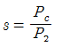
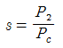
- s=P2 ㆍ Pc
- s=P2+Pc
(정답률: 64%)
51. 슬롯수 36의 고정자 철심이 있다. 여기에 3상 4극의 2층권을 시행할 때, 매극 매상의 슬롯수와 총 코일수는?
- 3과 18
- 9와 36
- 3과 36
- 9와 18
(정답률: 52%)
52. 입력 전압이 220V일 때, 3상 전파제어 정류회로에서 얻을 수 있는 직류 전압은 몇 V인가? (단, 최대 전압은 점호각 α=0일 때이고, 3상에서 선간전압으로 본다.)
- 152
- 198
- 297
- 317
(정답률: 36%)
53. 직류 전동기의 회전수를 1/2로 줄이려면, 계자 자속을 몇 배로 하여야 하는가?(단, 전압과 전류등은 일정하다.)
- 1
- 2
- 3
- 4
(정답률: 71%)
54. 전부하로 운전하고 있는 60Hz, 4극 권선형 유도 전동기의 전부하 속도는 1728rpm, 2차 1상의 저항은 0.02Ω이다. 2차 회로의 저항을 3배로 할 때의 회전수[rpm]는?
- 1264
- 1356
- 1584
- 1765
(정답률: 58%)
55. 단상 변압기 3대를 이용하여 3상 △-△결선을 했을 때, 1차와 2차 전압의 각변위(위상차)는?
- 30°
- 60°
- 120°
- 180°
(정답률: 45%)
56. 변압기의 임피던스 전압이란?
- 정격 전류 시 2차측 단자전압이다.
- 변압기의 1차를 단락, 1차에 1차 정격전류와 같은 전류를 흐르게 하는데 필요한 1차 전압이다.
- 변압기 내부 임피던스와 정격전류와의 곱인 내부 전압강하이다.
- 변압기 2차를 단락, 2차에 2차 정격전류와 같은 전류를 흐르게 하는데 필요한 2차 전압이다.
(정답률: 52%)
57. 3상 유도 전동기를 급속하게 정지시킬 경우에 사용되는 제동법은?
- 발전 제동법
- 회생 제동법
- 마찰 제동법
- 역상 제동법
(정답률: 70%)
58. 동기 전동기의 진상전류에 의한 전기자 반작용은 어떤 작용을 하는가?
- 횡축 반작용
- 교차 자화작용
- 증자 작용
- 감자 작용
(정답률: 70%)
59. 3상 권선형 유도전동기의 2차 회로의 한상이 단선된 경우에 부하가 약간 커지면 슬립이 50%인 곳에서 운전이 되는 것을 무엇이라 하는가?
- 차동기 운전
- 자기여자
- 게르게스 현상
- 난조
(정답률: 74%)
60. 2상 서보모터의 제어방식이 아닌 것은?
- 온도제어
- 전압제어
- 위상제어
- 전압·위상 혼합 제어
(정답률: 68%)
4과목: 회로이론
61.
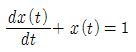
의 라플라스 변환 X(s)의 값은? (단, x(0)=0이다.)- s+1
- s(s+1)
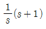
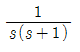
(정답률: 61%)
62. 4단자 회로에서 4단자 정수를 A, B, C, D라 할때 전달정수 θ는 어떻게 되는가?
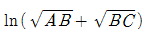
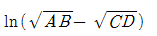
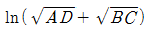
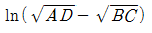
(정답률: 50%)
63. 다음 회로에서 10Ω의 저항에 흐르는 전류는 몇 A인가?
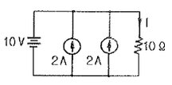
- 1
- 2
- 4
- 5
(정답률: 53%)
64. 3상 회로에 △결선된 평형 순저항 부하를 사용하는 경우 선간전압 220V, 상전류가 7.33A라면 1상의 부하저항은 약 몇 Ω인가?
- 80
- 60
- 45
- 30
(정답률: 67%)
65. 그림과 같은 순저항으로 된 회로에 대칭 3상 전압을 가했을 때, 각 선에 흐르는 전류가 같으려면 R[Ω]의 값은?
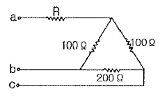
- 20
- 25
- 30
- 35
(정답률: 60%)
66. 다음 용어에 대한 설명으로 옳은 것은?
- 능동소자는 나머지 회로에 에너지를 공급하는 소자이며, 그 값은 양과 음의 값을 갖는다.
- 종속전원은 회로 내의 다른 변수에 종속되어 전압 또는 전류를 공급하는 전원이다.
- 선형소자는 중첩의 원리와 비례의 법칙을 만족할 수 있는 다이오드 등을 말한다.
- 개방회로는 두 단자 사이에 흐르는 전류가 양 단자에 전압과 관계없이 무한대 값을 갖는다.
(정답률: 51%)
67. 그림과 같은 회로에서 입력을 V1(s), 출력을 V1(s)라 할 때, 전압비 전달함수는?
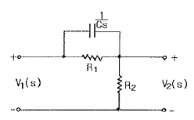
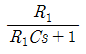
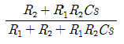
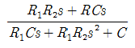
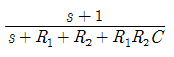
(정답률: 58%)
68. 어떤 코일에 흐르는 전류를 0.5ms 동안에 5A만큼 변화시킬 때 20V의 전압이 발생한다. 이 코일의 자기 인덕턴스[mH]는?
- 2
- 4
- 6
- 8
(정답률: 60%)
69. 반파대칭 및 정현대칭인 왜형파의 푸리에 급수의 전개에서 옳게 표현된 것은? (단,
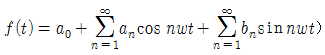
)- an의 우수항만 존재한다.
- an의 기수항만 존재한다.
- bn의 우수항만 존재한다.
- bn의 기수항만 존재한다.
(정답률: 65%)
70. 어떤 소자가 60Hz에서 리액턴스 값이 10Ω이었다. 이 소자를 인덕터 또는 커패시터라 할때, 인덕턴스[mH]와 정전용량 [㎌]은 각각 얼마인가?
- 26.53 mH, 295.37 ㎌
- 18.37 mH, 265.25 ㎌
- 18.37 mH, 295.37 ㎌
- 26.53 mH, 265.25 ㎌
(정답률: 57%)
71. 다음과 같은 π형 회로의 4단자 정수 중 D의 값은?
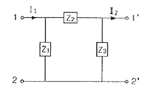
- Z2
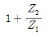
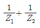
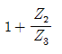
(정답률: 59%)
72. 전기량(전하)의 단위로 알맞은 것은?
- C
- mA
- nW
- ㎌
(정답률: 78%)
73. 저항 60Ω과 유도리액턴스 wL=80Ω인 코일이 직렬로 연결된 회로에 200V의 전압을 인가할 때 전압과 전류의 위상차는?
- 48.17°
- 50.23°
- 53.13°
- 55.27°
(정답률: 57%)
74. 다음 회로에서 t=0일 때 스위치 K를 닫았다. i1(0+),i2(0+)의 값은? (단, t＜0에서 C전압과 L전압은 각각 0V이다.)
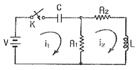
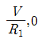
- 0,0
(정답률: 49%)
75. 그림과 같이 저항 R=3Ω과 용량리액턴스 인 콘덴서가 병렬로 연결된 회로에 100V의 교류 전압을 인가할 때, 합성 임피던Z[Ω]는?
- 1.2
- 1.8
- 2.2
- 2.4
(정답률: 39%)
76. 전달함수 을 갖는 요소가 있다. 이 요소에 w=2[rad/sec]인 정현파를 주었을 때 |G(jw)| 를 구하면?
- 8
- 6
- 4
- 2
(정답률: 59%)
77. 시정수 t를 갖는 RL직렬회로에 직류 전압을 가할 때 t=2t되는 시간에 회로에 흐르는 전류는 최종값의 약 몇%인가?
- 98
- 95
- 86
- 63
(정답률: 47%)
78. 3상 4선식에서 중성선이 필요하지 않아서 중성선을 제거하여 3상 3선식으로 하려고 한다. 이때 중성선의 조건식은 어떻게 되는가? (단, Ia, Ib, Ic는 각상의 전류이다.)
- Ia+Ib+Ic=1
- Ia+Ib+Ic=√3
- Ia+Ib+Ic=3
- Ia+Ib+Ic=0
(정답률: 74%)
79. 에서 모든 초기값을 0으로 하고 라플라스 변환 할 때 I(s)는? (단, I(s), Ei(s)는 i(t), ei(t)의 라플라스 변환이다.)
(정답률: 66%)
80. 대칭 3상 Y결선 부하에서 각 상의 임피던스가 16+j12Ω이고 부하전류가 10A일 때, 이 부하의 선간전압은 약 몇 V인가?
- 152.6
- 229.1
- 346.4
- 445.1
(정답률: 71%)
5과목: 전기설비기술기준 및 판단 기준
81. 변압기로서 특고압과 결합되는 고압전로의 혼촉에 의한 위험방지 시설은?
- 프아이머리 컷아웃 스위치
- 제 2종 접지공사
- 휴즈
- 사용 전압의 3배의 전압에서 방전하는 방전장치
(정답률: 44%)
82. 특고압 가공전선로에서 양측의 경간의 차가 큰 곳에 사용하는 철탑의 종류는?
- 내장형
- 직선형
- 인류형
- 보강형
(정답률: 75%)
83. 발전기, 변압기, 조상기, 모선 또는 이를 지지하는 애자는 단락전류에 의하여 생기는 어느 충격에 견디어야 하는가?
- 기계적 충격
- 철손에 의한 충격
- 동손에 의한 충격
- 표류부하손에 의한 충격
(정답률: 67%)
84. 옥내에 시설하는 저압 전선으로 나전선을 사용할 수 있는 배선공사는?
- 합성수지관 공사
- 금속관 공사
- 버스덕트 공사
- 플로어 덕트 공사
(정답률: 50%)
85. 금속제 수도관로 또는 철골, 기타의 금속제를 접지극으로 사용한 제1종 또는 제2종 접지공사의 접지선 시설방법은 어느 것에 준하여 시설하여야 하는가?(관련 규정 개정전 문제로 여기서는 기존 정답인 4번을 누르면 정답 처리됩니다. 자세한 내용은 해설을 참고하세요.)
- 애자 사용 공사
- 금속 몰드 공사
- 금속관 공사
- 케이블 공사
(정답률: 56%)
86. 22kV 전선로의 절연내력 시험은 전로와 대지간에 시험전압을 연속하여 몇 분간 가하여 시험하게 되는가?
- 2
- 4
- 8
- 10
(정답률: 70%)
87. 저압 옥내배선을 케이블트레이 공사로 시설하려고 한다. 틀린 것은?
- 저압 케이블과 고압 케이블은 동일 케이블 트레이 내에 시설하여서는 안된다.
- 케이블 트레이 내에서는 전선을 접속하여서는 안된다.
- 수평으로 포설하는 케이블 이외의 케이블은 케이블 트레이 의 가로대에 견고하게 고정시킨다.
- 절연금속을 금속관에 넣으면 케이블트레이 공사에 사용할 수 있다.
(정답률: 44%)
88. 건조한 장소에 시설하는 애자사용 공사로서 사용전압이 440V인 경우 전선과 조영재와의 이격거리는 최소 몇 cm 이상이어야 하는가?
- 2.5
- 3.5
- 4.5
- 5.5
(정답률: 56%)
89. 가공전선로의 지지물에 지선을 시설할 때 옳은 방법은?
- 지선의 안전율을 2.0으로 하였다.
- 소선은 최소 2가닥 이상의 연선을 사용하였다.
- 지중의 부분 및 지표상 20cm까지의 부분은 아연도금 철봉 등 내부식성 재료를 사용하였다.
- 도로를 횡단하는 곳의 지선의 높이는 지표상 5m로 하였다.
(정답률: 59%)
90. 교통신호등의 시설공사를 다음과 같이 하였을 때 틀린 것은?
- 전선은 450/750V 일반용 단심 비닐 절연전선을 사용하였다.
- 신호등의 인하선은 지표상 2.5m로 하였다.
- 사용전압을 300V 이하로 하였다.
- 제어장치의 금속제 외함은 특별 제 3종 접지공사를 하였다.
(정답률: 48%)
91. 전로의 절연 원칙에 따라 반드시 절연하여야 하는 것은?
- 수용장소의 인입구 접지점
- 고압과 특별고압 및 저압과의 혼촉 위험 방지를 한 경우의 접지점
- 저압 가공전선로의 접지측 전선
- 시험용 변압기
(정답률: 40%)
92. 발전기의 용량에 관계없이 자동적으로 이를 전로로부터 차단하는 장치를 시설하여야 하는 경우는?
- 과전류 인입
- 베어링 과열
- 발전기 내부고장
- 유압의 과팽창
(정답률: 54%)
93. 방직공장의 구내 도로에 220V 조명등용 가공 전선로를 시설하고자 한다. 전선로의 경간은 몇 m 이하이어야 하는가?
- 20
- 30
- 40
- 50
(정답률: 56%)
94. 옥외 백열전등의 인하선으로 공칭단면적 2.5mm2 이상의 연동선과 동등 이상의 세기 및 굵기의 절연전선을 사용해야 하는 지표상의 높이는 몇 m 미만인가?
- 2.5
- 3
- 3.5
- 4
(정답률: 38%)
95. 345kV 가공 송전선로를 제1종 특고압 보안 공사에 의할 때 사용되는 경동연선의 굵기는 몇 mm2이상이어야 하는가?
- 150
- 200
- 250
- 300
(정답률: 43%)
96. 금속관 공사에 의한 저압옥내배선 시설 방법으로 틀린것은?
- 전선은 절연전선일 것
- 전선은 연선일 것
- 관의 두께는 콘크리트에 매설시 1.2mm 이상일 것
- 사용전압이 400V 이상인 관에는 제 3종 접지공사를 할 것
(정답률: 61%)
97. 한 수용장소의 인입선에서 분기하여 지지물을 거치지 않고 다른 수용장소의 인입구에 이르는 부분의 전선을 무엇이라 하는가?
- 가공 인입선
- 인입선
- 연접 인입선
- 옥측배선
(정답률: 66%)
98. 중량물이 통과하는 장소에 비닐외장 케이블을 직접 매설식으로 시설하는 경우 매설 깊이는 몇 m 이상이어야 하는가?(관련 규정 개정전 문제로 여기서는 기존 정답인 3번을 누르면 정답 처리됩니다. 자세한 내용은 해설을 참고하세요.)
- 0.8
- 1.0
- 1.2
- 1.5
(정답률: 66%)
99. 특고압 가공전선이 다른 특고압 가공전선과 교차하여 시설하는 경우는 제 몇 종 특고압 보안 공사에 의하여야 하는가?
- 1종
- 2종
- 3종
- 4종
(정답률: 39%)
100. 특고압 전로와 저압 전로를 결합하는 변압기 저압측의 중성점에 제 2종 접지공사를 토지의 상황 때문에 변압기의 시설장소마다 하기 어려워서 가공 접지선을 시설하려고 한다. 이 때 가공 접지선으로 경동선을 사용한다면 그 최소 굵기는 몇 mm인가?(관련 규정 개정전 문제로 여기서는 기존 정답인 2번을 누르면 정답 처리됩니다. 자세한 내용은 해설을 참고하세요.)
- 3.2
- 4
- 4.5
- 5
(정답률: 53%)